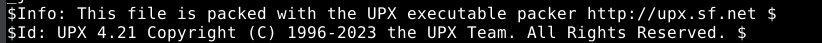
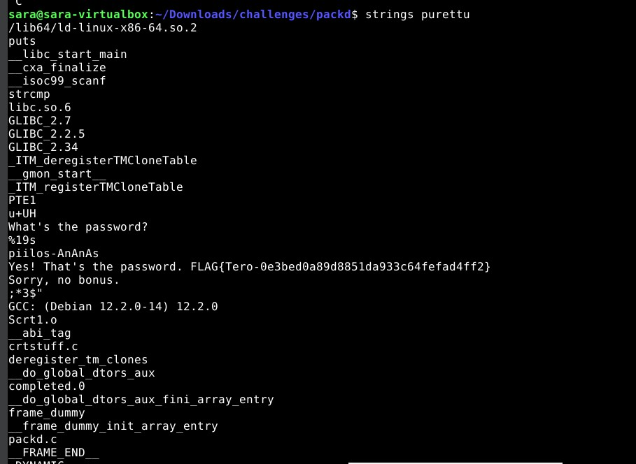

a.
Salasana tehtävään oli sala-hakkeri-321. FLAG{Tero-d75ee66af0a68663f15539ec0f46e3b1}
Löysin salasanan ja flagin lataamalla tiedoston ja ajamalla komennon "strings passtr".

b.
Korjattu versio, käytetty obfuskointia:

Tämän tehtävän ratkaisemiseen jouduin pyytämään apua koodin muotoiluun Copilotilta, koska c-kieli että obfuskointi ovat minulle täysin vieraita. Tehtävässä on myös hyödynnetty sivua "https://promon.io/resources/knowledge-center/code-obfuscation-guide"
c.
Kokeilin tähän tehtävään heti strings-komentoa, vaikka tehtävän kuvaus antoikin ymmärtää ettei se pelkästään toimi. Eikä se toiminutkaan.
Tämä rivi kuitenkin kiinnitti huomioni:
Koska tätä riviä ei ollut edellisessä tehtävässä, googlasin UPX:n ja sain selville sen olevan "pakkaustyökalu" jotta binääriä olisi vaikeampaa lukea.
Latasin upx työkalun koneelleni komennolla "apt install upx -y". Sen jälkeen ajoin komennon "upx -d packd -o purettu". -d tarkoittaa "decompress" ja -o luo uuden filen jotta alkuperäistä ei ylikirjoiteta.
Sen jälkeen ajoin uudestaan "strings purettu" ja sain tämän näkymän:
Seuraavaksi ajoin vain uudelleen itse ohjelman ja salasanan:

Tehtävässä on käytetty apuna tätä blogi kirjoitusta, joka selittää asian hiukan syvällisemmin kuin mitä sen itse tein. "https://medium.com/@7HPL/unpacking-upx-in-x64-d186b2d72c70"
Lähteet
Kurssin materiaali
https://promon.io/resources/knowledge-center/code-obfuscation-guide
https://medium.com/@7HPL/unpacking-upx-in-x64-d186b2d72c70
Copilot